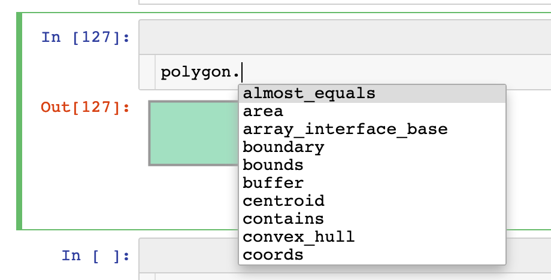

Part 1: Introduction to Vector Data Processing in Python¶
You probably know the ogr package for vector data processing in Python. But that’s not all. This notebook will give you a short overview of other Python packages used for vector data processing in Python. We will look at:
geojson
fiona
shapely
During the course we will mainly work with GeoJSON files instead of shapefiles. Therefore, the first section of this notebook gives a brief explanation of this format.
1. The GeoJSON Format¶
GeoJSON is a format for encoding a variety of geographic data structures.
It is based on JavaScript Object Notation (JSON) which is an open standard file format, and data interchange format, that uses human-readable text to store and transmit data objects consisting of attribute–value pairs and array data types (or any other serializable value). Wikipedia
A feature object contains a geometry and additional properties.
{
"type": "Feature",
"geometry": {
"type": "Point",
"coordinates": [125.6, 10.1]
},
"properties": {
"name": "Dinagat Islands"
}
}
GeoJSON supports the following geometry types: * Point * LineString * Polygon * MultiPoint * MultiLineString * MultiPolygon
A Feature Collection object contains sets of features.
{
"type":"FeatureCollection",
"features":[{"type":"Feature",
"properties":{...},
"geometry": {...},
{"type":"Feature",
"properties":{...},
"geometry":{...}
}]
}
Question:¶
Which data types in Python are suitable to represent geojson data in Python?
Why we use GeoJSON in this course: * Very good integration in Python as dictionaries → easily read using json or geojson packages * GeoJSON supported by many packages: fiona, shapely, geopandas (all other GDAL file formats are supported as well) * Readible by humans and machines * Web APIs use json/geojson as reponse format
2. json / geojson: Reading json / geojson files¶
The json package makes reading and writing json files easy in Python:
json.load()/json.loads() for decoding: file connection / string → dict
json.dump()/json.dumps() for encoding: dict → file connection / string
[2]:
file_path = "./data/some_features.geojson"
[3]:
import json
src = open(file_path, "r")
data_geojson = json.load(src)
src.close()
[4]:
type(data_geojson)
[4]:
dict
[5]:
data_geojson
[5]:
{'type': 'FeatureCollection',
'features': [{'type': 'Feature',
'properties': {'color': 'green', 'id': 1},
'geometry': {'type': 'Polygon',
'coordinates': [[[8.670530319213867, 49.41337442939828],
[8.685293197631836, 49.41337442939828],
[8.685293197631836, 49.421861555723595],
[8.670530319213867, 49.421861555723595],
[8.670530319213867, 49.41337442939828]]]}},
{'type': 'Feature',
'properties': {'color': 'blue', 'id': 2},
'geometry': {'type': 'Polygon',
'coordinates': [[[8.680486679077148, 49.418455714236885],
[8.69619369506836, 49.418455714236885],
[8.69619369506836, 49.42833758576036],
[8.680486679077148, 49.42833758576036],
[8.680486679077148, 49.418455714236885]],
[[8.688468933105469, 49.42398310798032],
[8.693962097167969, 49.42398310798032],
[8.693962097167969, 49.426607006252176],
[8.688468933105469, 49.426607006252176],
[8.688468933105469, 49.42398310798032]]]}}]}
When you open a file connection to read it, it is very important that you explicitly close it afterwards to avoid conflicts in file access with other programs. This is done using the close() method. However, we tend to forget it from time to time which can lead to problems in file access.
To avoid this Context managers are very helpful. You create them using the with ... as ...: statement. Everything inside the block is executed while the file is open. Afterwards the file is closed automatically.
[8]:
with open(file_path, "r") as src2:
data_geojson = json.load(src2)
E: Extract the coordinates of the first feature.
[21]:
data_geojson["features"][0]["geometry"]["coordinates"]
[21]:
[[[8.670530319213867, 49.41337442939828],
[8.685293197631836, 49.41337442939828],
[8.685293197631836, 49.421861555723595],
[8.670530319213867, 49.421861555723595],
[8.670530319213867, 49.41337442939828]]]
The geojson package is based on the json package but offers additional classes to represent different geometry types e.g. geojson.feature.Polygon.
→ Check out the geojson package documentation if you are interested
[41]:
import geojson
with open(file_path, "r") as src:
data_geojson = geojson.load(src)
[23]:
type(data_geojson)
[23]:
geojson.feature.FeatureCollection
[24]:
polygon = data_geojson["features"][0]["geometry"]
[25]:
type(polygon)
[25]:
geojson.geometry.Polygon
[28]:
polygon.keys()
[28]:
dict_keys(['type', 'coordinates'])
[30]:
new_feature = geojson.Feature(geometry=polygon, properties={"id": 321})
new_feature_geojson = geojson.dumps(new_feature)
[31]:
new_feature_geojson
[31]:
'{"type": "Feature", "geometry": {"type": "Polygon", "coordinates": [[[8.670530319213867, 49.41337442939828], [8.685293197631836, 49.41337442939828], [8.685293197631836, 49.421861555723595], [8.670530319213867, 49.421861555723595], [8.670530319213867, 49.41337442939828]]]}, "properties": {"id": 321}}'
[32]:
type(new_feature_geojson)
[32]:
str
[36]:
geojson.loads(new_feature_geojson)
[36]:
{"geometry": {"coordinates": [[[8.670530319213867, 49.41337442939828], [8.685293197631836, 49.41337442939828], [8.685293197631836, 49.421861555723595], [8.670530319213867, 49.421861555723595], [8.670530319213867, 49.41337442939828]]], "type": "Polygon"}, "properties": {"id": 321}, "type": "Feature"}
[13]:
new_feature_geojson
[13]:
'{"type": "Feature", "geometry": {"type": "Polygon", "coordinates": [[[8.670530319213867, 49.41337442939828], [8.685293197631836, 49.41337442939828], [8.685293197631836, 49.421861555723595], [8.670530319213867, 49.421861555723595], [8.670530319213867, 49.41337442939828]]]}, "properties": {"id": 321}}'
3. fiona: Reading and writing Geographic Data¶
“[Fiona] focuses on reading and writing data in standard Python IO style and relies upon familiar Python types and protocols such as files, dictionaries, mappings, and iterators instead of classes specific to GDAL’s OpenGIS Reference Implementation (OGR).”
→ Check out the Fiona Documentation
BTW: Why the name?¶
ogr → “Oger” → Shrek the Movie → Fiona
Reading data¶
Opening a file using fiona.open() and extracting metadata from the file:
[47]:
import fiona
source = fiona.open(file_path)
features = list(source)
crs = source.crs
metadata = source.meta
source.close()
E 3.1: Wait this looks like we could use a Context Manager again! Reformat the above code so that it uses a context manager.
[ ]:
Writing data¶
Writing data to file using fiona works in a similar way. You just need to pass mode='w' to the open() method.
The default is 'r' which stands for reading, while 'w' stands for writing.
When you create a new file you need to tell fiona the metadata of that file, e.g. driver, schema, etc. In this example we will just use the meta information of the input file contained in the metadata variable.
Writing the first feature of the original file to a new file looks like:
[54]:
metadata
[54]:
{'driver': 'GeoJSON',
'schema': {'properties': OrderedDict([('color', 'str'), ('id', 'int')]),
'geometry': 'Polygon'},
'crs': {'init': 'epsg:4326'},
'crs_wkt': 'GEOGCS["WGS 84",DATUM["WGS_1984",SPHEROID["WGS 84",6378137,298.257223563,AUTHORITY["EPSG","7030"]],AUTHORITY["EPSG","6326"]],PRIMEM["Greenwich",0,AUTHORITY["EPSG","8901"]],UNIT["degree",0.0174532925199433,AUTHORITY["EPSG","9122"]],AUTHORITY["EPSG","4326"]]'}
[16]:
outfile = "./data/test_out.geojson"
with fiona.open(outfile, "w", **metadata) as dst:
dst.write(features[0])
Exercises:¶
E 3.2: Extract all features, the crs (coordinate reference system) and the schema from the following file using fiona.
Hint: Place the mouse cursor next to the dot after the variable name and press TAB to show all available attributes and methods.

[55]:
file_path_2 = "./data/some_features.geojson"
[57]:
with fiona.open(file_path_2, "r") as src:
features = list(src)
crs = src.crs
schema = src.schema
[59]:
schema
[59]:
{'properties': OrderedDict([('color', 'str'), ('id', 'int')]),
'geometry': 'Polygon'}
Questions: 1. What how many features are contained in the geojson file? 2. What is the difference between the geometries of the features?
[60]:
features
[60]:
[{'type': 'Feature',
'id': '1',
'properties': OrderedDict([('color', 'green'), ('id', 1)]),
'geometry': {'type': 'Polygon',
'coordinates': [[(8.670530319213867, 49.41337442939828),
(8.685293197631836, 49.41337442939828),
(8.685293197631836, 49.421861555723595),
(8.670530319213867, 49.421861555723595),
(8.670530319213867, 49.41337442939828)]]}},
{'type': 'Feature',
'id': '2',
'properties': OrderedDict([('color', 'blue'), ('id', 2)]),
'geometry': {'type': 'Polygon',
'coordinates': [[(8.680486679077148, 49.418455714236885),
(8.69619369506836, 49.418455714236885),
(8.69619369506836, 49.42833758576036),
(8.680486679077148, 49.42833758576036),
(8.680486679077148, 49.418455714236885)],
[(8.688468933105469, 49.42398310798032),
(8.693962097167969, 49.42398310798032),
(8.693962097167969, 49.426607006252176),
(8.688468933105469, 49.426607006252176),
(8.688468933105469, 49.42398310798032)]]}}]
Answer:
E 3.3: Save the features to separate new variables ‘feature1’ and ‘feature2’.
[61]:
feature1 = features[0]
feature2 = features[1]
[62]:
feature1
[62]:
{'type': 'Feature',
'id': '1',
'properties': OrderedDict([('color', 'green'), ('id', 1)]),
'geometry': {'type': 'Polygon',
'coordinates': [[(8.670530319213867, 49.41337442939828),
(8.685293197631836, 49.41337442939828),
(8.685293197631836, 49.421861555723595),
(8.670530319213867, 49.421861555723595),
(8.670530319213867, 49.41337442939828)]]}}
E 3.4: Print the coordinates of feature2.
[65]:
feature2["geometry"]["coordinates"][1]
[65]:
[(8.688468933105469, 49.42398310798032),
(8.693962097167969, 49.42398310798032),
(8.693962097167969, 49.426607006252176),
(8.688468933105469, 49.426607006252176),
(8.688468933105469, 49.42398310798032)]
E 3.5: Fill the hole of the geometry of feature2 by manipulating the geojson dictionary. Afterwards, execute the cell above again to see how the coordinates changed.
[68]:
feature2
[68]:
{'type': 'Feature',
'id': '2',
'properties': OrderedDict([('color', 'blue'), ('id', 2)]),
'geometry': {'type': 'Polygon',
'coordinates': [[(8.680486679077148, 49.418455714236885),
(8.69619369506836, 49.418455714236885),
(8.69619369506836, 49.42833758576036),
(8.680486679077148, 49.42833758576036),
(8.680486679077148, 49.418455714236885)]]}}
[67]:
del feature2["geometry"]["coordinates"][1]
4. shapely: Geometric Operations and Manipulations¶
Removing a hole from a polygon is easy when it is represented as a dictionary, but what if we want to perform more complex geometric operations such as intersections between two geometries? In this case, we need more complex data structures than a dictionary.
shapely is the perfect tool for this! It converts dictionary-like objects to geometry objects and allows us to perform geospatial operations.
→ Check out the Shapely User Manual
Shapely supports the same geometry types as GeoJSON (see above).
[69]:
from shapely.geometry import Point, LineString
[70]:
point = Point(8.69, 49.41)
type(point)
[70]:
shapely.geometry.point.Point
[76]:
point
[76]:
Using the method shapely.geometry.shape you can convert GeoJSON dictionaries to geometry objects.
[77]:
from shapely.geometry import shape
[81]:
geometry1 = feature1["geometry"]
polygon1 = shape(geometry1)
polygon1
[81]:

[82]:
type(polygon1)
[82]:
shapely.geometry.polygon.Polygon
The geometry obejcts contain attributes and methods which allow geometric operations.
[83]:
polygon1.centroid
[83]:
[88]:
polygon1.to_wkt()
[88]:
'POLYGON ((8.6705303192138672 49.4133744293982815, 8.6852931976318359 49.4133744293982815, 8.6852931976318359 49.4218615557235950, 8.6705303192138672 49.4218615557235950, 8.6705303192138672 49.4133744293982815))'
[88]:
polygon1.to_wkt()
[88]:
'POLYGON ((8.6705303192138672 49.4133744293982815, 8.6852931976318359 49.4133744293982815, 8.6852931976318359 49.4218615557235950, 8.6705303192138672 49.4218615557235950, 8.6705303192138672 49.4133744293982815))'
Converting geometry obejcts to geojson is done using shapely.geometry.mapping().
[90]:
type(polygon1)
[90]:
shapely.geometry.polygon.Polygon
[92]:
from shapely.geometry import mapping
type(mapping(polygon1))
[92]:
dict
E 4.1: Create a rectangle geometry with a hole using shapely.
[ ]:
E 4.2: Create a point which is located inside the rectangle.
[ ]:
E 4.3: Use the a suitbale shapely method to check whether the point is inside the rectangle.
[ ]:
E 4.4: Convert the geometry of the second feature to a shapely.geometry.Polygon called polygon2.
[ ]:
E 4.6: Calculate the intersection between poylgon1 and poylgon2.
[ ]:
5. Summary¶
geojson and json in general work) very well with Python.
shapely and fiona provide classes to represent geospatial data and perform geospatial analyses in Python.
Of course there are more relevant packages, e.g. pyproj to transform geometries to different coordinate reference systems
We already have the ogr package to do the same things? So why do we need shapely and fiona?
→ Continue with Part 2: Why all these packages to find out.